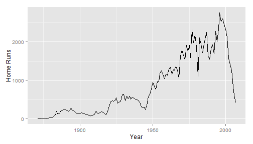

Baseball has always been a game of numbers. The baseball dataset in the plyr R package allows us to analyze some of the basic baseball statistics that have been measured going back to 1871. It's easy enough to look at things like the number of home runs by year in this dataset with a few lines of code.
hr <- ddply(baseball, "year", function(data) sum(data$hr))
ggplot(data=hr,aes(year, V1)) + geom_line() + xlab("Year") + ylab("Home Runs")
